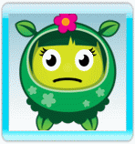

Hast du Probleme den letzen Stern in dem Level zu bekommen? Oder Probleme das Level abzuschliessen?
Hier sind einige Tips welche dir weiterhelfen:
- Wenn du Probleme mit den Grundlagen hast, schaue dir das Tutorial nocheinmal an.
- Lese alle Zeichen und Tips an denen du vorbeikommst, sie enthalten wertvolle Informationen!
- Probiere Blumen gleichmässig zu füttern. Wenn du dich auf eine einzige Blume versteifst kann es sein das dir die Zeit wegläuft.
- Passe auf das du die Blumen mit der richtigen Farbe fütterst. Lese dir auch durch was jede Blume zu sagen hat.
- Lerne Farben in der Luft zu mischen!
- Hast du dich verlaufen? Kannst du ein Level oder die richtigen Samen nicht finden? Nimm dir ein wenig Zeit die Welt zu erkunden. Probiere den Pfaden zu folgen.
- Lerne die Karte zu benutzen. Du kannst dich nicht nur zu jeden schon gespielten Level teleportieren, sie zeigt dir auch Gartenzwerge oder Level welche du noch nicht gespielt hast.
- Du kannst keine Bewertung mit 5 Sternen in einem Level erreichen? Keinen Stress hebe sie dir für später auf. Wenn du neue Fähigkeiten bekommst probiere das Level nocheinmal. Das Resultat könnte dich überraschen!
- Experten können nur Feuerwerk benutzen. Wenn du genug davon in Gang setzt musst du dich nicht mehr darum kümmern das du Blumen fütterst.
- Probiere die Pollen möglichst weit entfernt von der Blume freizulassen. Umso weiter weg umso größer ist die Chance auf Feuerwerk.
- Fast alles bringt dir Punkte aber Feuerwerkkombinationen bringen richtig viel Punkte. Große Kombinationen bringen dir satte 500,000 Punkte!